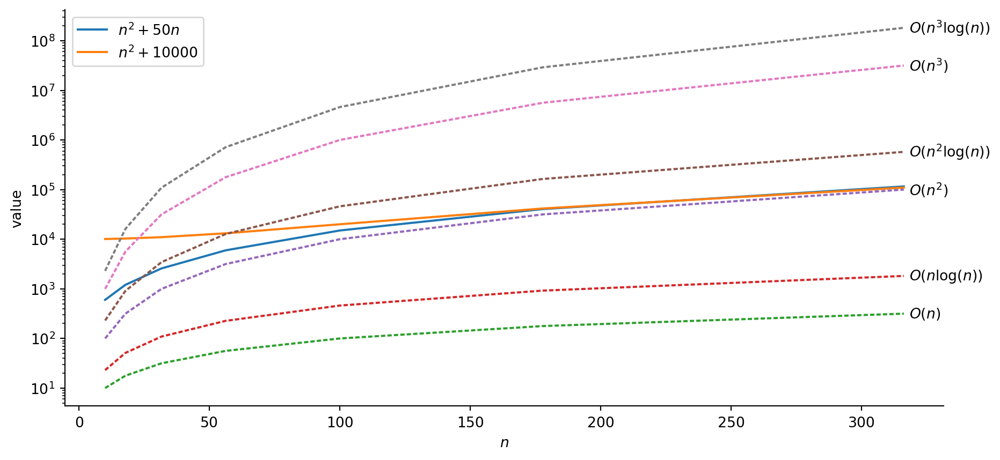
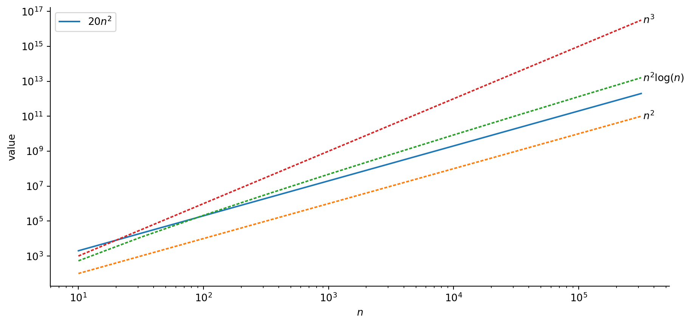

(38.9076, -77.0723)DSAN 5500: Data Structures, Objects, and Algorithms in Python
Monday, January 29, 2024
booleanintfloatstringNonefloats: latitude and longitude!x = ['a','b','c']
x[0] = 'a'x[1] = 'b'x[2] = 'c'listif:Number of animals I saw: 7Animals we both saw: {'bird', 'lizard'}Animals either of us saw: {'fish', 'dog', 'bird', 'cat', 'lizard'}Animals I saw that you didn't see: {'cat', 'fish'}
Animals you saw that I didn't see: {'dog'}dict_keys(['name', 'founded', 'coordinates', 'location'])
dict_values(['Georgetown University', 1789, (38.9076, -77.0723), {'city': 'Washington', 'state': 'DC', 'country': 'USA'}]).items():class MyListItem:
def __init__(self, content):
self.content = content
self.next = None
def append(self, new_item):
if self.next is None:
self.next = MyListItem(new_item)
else:
self.next.append(new_item)
def __repr__(self):
my_content = self.content
return my_content if self.next is None else f"{my_content}, {self.next.__repr__()}"MyTuple?MyTuple?MyList?MyList?MyList:BoJeffJeff
JeffAlma
JeffBo
AlmaJeff
AlmaAlma
AlmaBo
BoJeff
BoAlma
BoBoprinted_items = []
cur_pointer1 = users.root
while cur_pointer1 is not None:
cur_pointer2 = users.root
while cur_pointer2 is not None:
print(cur_pointer1.content + cur_pointer2.content)
printed_items.append(cur_pointer1.content)
printed_items.append(cur_pointer2.content)
cur_pointer2 = cur_pointer2.next
cur_pointer1 = cur_pointer1.next
check_pointer = users.root
while check_pointer is not None:
if check_pointer.content in printed_items:
print(f"Phew. {check_pointer.content} printed at least once.")
else:
print(f"Oh no! {check_pointer.content} was never printed!!!")
check_pointer = check_pointer.nextJeffJeff
JeffAlma
JeffBo
AlmaJeff
AlmaAlma
AlmaBo
BoJeff
BoAlma
BoBo
Phew. Jeff printed at least once.
Phew. Alma printed at least once.
Phew. Bo printed at least once.import pandas as pd
import numpy as np
import matplotlib.pyplot as plt
import seaborn as sns
n_vals = [np.power(10, k) for k in np.arange(1, 2.75, 0.25)]
runtime_df = pd.DataFrame({'$n$': n_vals})
runtime_df['$n^2 + 50n$'] = runtime_df['$n$'].apply(lambda x: np.power(x, 2) + 50*x)
runtime_df['$n^2 + 10000$'] = runtime_df['$n$'].apply(lambda x: np.power(x, 2) + 10000)
runtime_df['$O(n)$'] = runtime_df['$n$'].copy()
runtime_df['$O(nlogn)$'] = runtime_df['$n$'].apply(lambda x: x * np.log(x))
runtime_df['$O(n^2)$'] = runtime_df['$n$'].apply(lambda x: np.power(x, 2))
runtime_df['$O(n^2logn)$'] = runtime_df['$n$'].apply(lambda x: np.power(x,2) * np.log(x))
runtime_df['$O(n^3)$'] = runtime_df['$n$'].apply(lambda x: np.power(x, 3))
runtime_df['$O(n^3logn)$'] = runtime_df['$n$'].apply(lambda x: np.power(x, 3) * np.log(x))
# Get the max values, for labeling the ends of lines
max_vals = runtime_df.max().to_dict()
plot_df = runtime_df.melt(id_vars=['$n$'])
#print(plot_df)
style_map = {col: '' if (col == '$n^2 + 50n$') or (col == '$n^2 + 10000$') else (2,1) for col in runtime_df.columns}
fig, ax = plt.subplots(figsize=(11,5))
sns.lineplot(plot_df, x='$n$', y='value', hue='variable', style='variable', dashes=style_map)
#plt.xscale('log')
plt.yscale('log')
# extract the existing handles and labels
h, l = ax.get_legend_handles_labels()
# slice the appropriate section of l and h to include in the legend
ax.legend(h[0:2], l[0:2])
for label, val in max_vals.items():
if (label == '$n$') or (label == '$n^2 + 50n$') or (label == '$n^2 + 10000$'):
continue
if 'logn' in label:
label = label.replace('logn', r'\log(n)')
ax.text(x = max_vals['$n$'] + 2, y = val, s=label, va='center')
# Hide the right and top spines
ax.spines[['right', 'top']].set_visible(False)
plt.show()
n_vals = [np.power(10, k) for k in np.arange(1, 6, 0.5)]
rt_const_df = pd.DataFrame({'$n$': n_vals})
rt_const_df['$20n^2$'] = rt_const_df['$n$'].apply(lambda x: 20*np.power(x,2))
rt_const_df['$n^2$'] = rt_const_df['$n$'].apply(lambda x: np.power(x,2))
rt_const_df['$n^2logn$'] = rt_const_df['$n$'].apply(lambda x: np.power(x,2) * np.power(np.log(x),2))
rt_const_df['$n^3$'] = rt_const_df['$n$'].apply(lambda x: np.power(x,3))
# Get the max values, for labeling the ends of lines
max_vals = rt_const_df.max().to_dict()
plot_df_const = rt_const_df.melt(id_vars=['$n$'])
style_map = {col: '' if (col == '$20n^2$') else (2,1) for col in rt_const_df.columns}
fig_const, ax_const = plt.subplots(figsize=(11,5))
sns.lineplot(plot_df_const, x='$n$', y='value', hue='variable', style='variable', dashes=style_map)
plt.xscale('log')
plt.yscale('log')
# extract the existing handles and labels
h_const, l_const = ax_const.get_legend_handles_labels()
# slice the appropriate section of l and h to include in the legend
ax_const.legend(h_const[0:1], l_const[0:1])
for label, val in max_vals.items():
if (label == '$n$') or (label == '$20n^2$'):
continue
if 'logn' in label:
label = label.replace('logn', r'\log(n)')
ax_const.text(x = max_vals['$n$'] + 10**4, y = val, s=label, va='center')
# Hide the right and top spines
ax_const.spines[['right', 'top']].set_visible(False)
plt.show()
DSAN 5500 Week 3: Data Structures, Computational Complexity